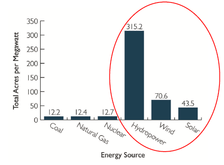
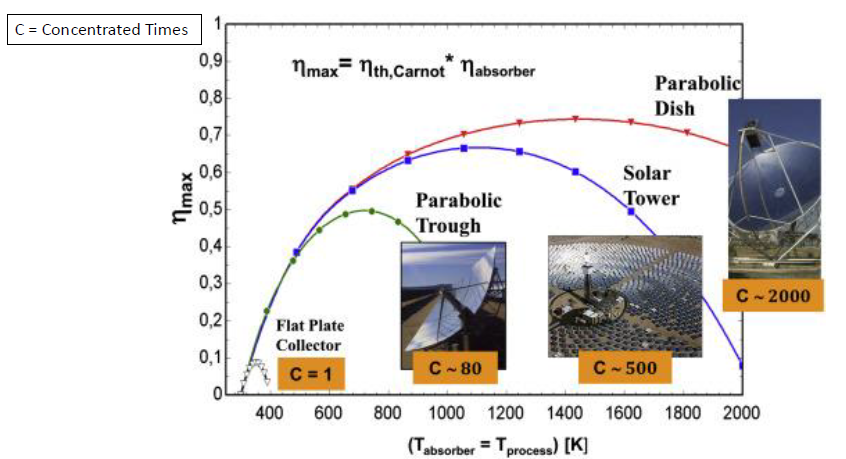

EE600 Notes
1 Week 2: Introduction to Solar Energy
1.1 Lecture: Introduction to Solar Energy
Thermal solar and energy storage
Solar PV
Over-Generation of Solar Energy: The Duck Curve
The Role of Energy Storage
PVWatts Calculator
1.1.1 The Footprint of Energy Sources

Note: The wind turbine “footprint,” which is typically around 0.25 acres per turbine, does not include the 5010 turbine diameters of spacing required between wind turbines.
1.1.2 Main Characteristics of solar Energy
Unlimited
The earth receives \(1.6 * 10^{17} W\).
84 minutes of solar radiation falling on earth is equal to the world energy demand for 1 year.
Diluted
- About 200 \(W/m^2\) available (at noon) with mainstream PV technologies.
Intermittent
- requires energy storage and/or grid management (smart grids).
1.1.3 Solar Energy
1.1.3.1 Stefan-Boltzmann Law
\[ P = \alpha \sigma AT^4 \]
Where:
\(\sigma = 5.67 * 10^{-8}\) \(Wm^{-2}K^{-4}\) is the Stefan-Boltzmann constant
\(\alpha\) is the emissivity.
Emissivity is a dimensionless “fudge factor” which ranges from 0 to 1. A perfect absorber/emitter has \(\alpha = 1\).
A small increase in temperature leas to a large increase in radiated power.
1.1.3.2 Wein’s Displacement Law
The intensity of emitted radiation in a wavelength range increases with the increase in temperature for all wavelengths.
\[\lambda_{max} T = b\]
Where:
\(\lambda_{max}\) is wavelength in meter
T is temperature in Kelvin
\(b = 2.9 *10^{-3}mK\) is Wien’s displacement constant.
1.1.4 Spectrum of the Sun
The spectral energy distribution of solar light has a maxima in visible portion.
The other portion of spectrum produce heat if absorbed.
Spectrum changes when sunlight passes through the atmosphere due to:
Reflection of light
Absorption of light
Rayleigh scattering
Scattering of aerosols and dust particles
Spectural Composition of Energy (AM 1.5)
UV(<\(4\mu m\)): 5%
Visible (0.4 - 0.75 \(\mu m\)): 40%
IR (>0.75 \(\mu m\)): 55%
1.1.5 Solar Radiation Definitions
Irradiance (\(W/m^2\))
- Measure of the surface power density of sunlight (instantaneous quantity)
Irradiation (\(kWh/m^2\))
- Measure of the energy density of sunlight or cumulated energy received in a given period (integral of irradiance over time)
1.1.6 Annual Motion of the Earth about the Sun
Insolation (incoming solar radiation)
Solar radiation received by the earth system, known as insolation, is the main source of energy on Earth.
Variations in insolation lies with the duration of daylight and the angle of the solar rays.
1.1.7 Solar Arrays Tilt Angle
A common rule of thumb for fixed arrays is to set the tilt angle to the latitude of the system’s location to maximize the system’s total electrical output over the year.
In additions, you can use a lower tilt angle favor peak production in the summer months when the Sun is high in the sky, or a higher tilt angle increase output during winter months.
1.1.7.1 Example
In the Summer, if the Sun is at an angle of 60\(^\circ\) to the horizon.
In the Winter, if the Sun is at an angle of 25\(^\circ\) to the horizon.
Optimum angle in the Summer is 90 - 60 = 30 degrees
Optimum angle in the Winter is 90 -25 = 65 degrees
1.1.8 Concentrated Solar and Photovoltaics
1.1.8.1 Concentrating Solar Power
Heat exchanger + steam turbine-gen
Direct radiation
Can be used for energy thermal storage
Steam turbine-gen. and synch. Stability
1.1.8.2 Photovoltaics
Photoelectric effect - DC
Direct and diffuse radiation
CPV
1.1.9 Approache to CSP
CSP systems capture the direct beam component of solar radiation.
Unlike photovoltaics (PV), they are not able to use radiation that has been diffused by clouds, dust or other factors.
Best suited to areas with a high percentage of clear sky days, in locations that do not have smog or dust.
The configurations that are currently used commercially in order of deployment level are:
Parabolic trough
central receiver tower
Paraboloidal dishes
Fresnel lenses (for CPV)
1.1.10 Power Tower with Storage
Solar power tower consists of a large field of sun tracking mirrors, called heliostats, which focus solar energy on a receiver atop of a centrally located tower.
The energy coming ou tot he sun’s rays is concentrated a one point producing temperature of approx. 550\(^\circ\)C to 1500\(^\circ\)C.
Tower is used to heat water to produce steam to turn a turbine which produces electricity.
Molten salt is used to transfer the heat because the heat can be stored and used when the sun is behind the clouds or at night.
1.1.11 CPS System Efficiency

1.1.12 PV Arrays
1.1.12.1 Spectrum of the Sun
Light having energy less than band gap of semiconductor does not produce electron hole pair and hence can not be useful for photovoltage.
If the used semiconductor has band gap in the energy range of the visible light, infrared portion will not be useful for photovoltaic application.
The spectral energy distribution of solar light has a maxima in the visible portion.
This is at around 1.5 eV and hence the semiconductor having band gap near 1.5 eV is preferred for solar cells.
Since maxima in intensity occurs in the visible portion of sun light, only this portion is useful.
The other portion of spectrum is not useful. It produces heat if absorbed or attempts are made to get it reflected.
This is on of the reasons of low efficiency of solar cells as only 46 percent is visible portion.
1.1.13 Technology Drives Cost Down
The DOE’s most recent funding wen toward hardware improvements in non-silicon solar approaches, think films, and next-generation concentrated solar power.
The DOE target cuts the cost of solar energy by 60% within the next 10 years.
According to the International Renewable Energy Agency, 82% reduction in solar cost over the last decade came from economies of scale, better technology, and supply chains at largely silicon-based solar plants, not the alternative technologies being funded by the DOE.
As opposed to the DOE strategy, a JV company (Terabase Energy) is working to drive down utility-scale solar power prices to less than $0.01 per kilowatt-hour by 2025, by using software, automation, and modeling to optimize power-plant operation.
1.1.14 Solar Glass Could Convert the Windows of Every Building Into Power-Generating Panels
Ubiquitous Energy claims that the organic transparent solar coating selectively absorbs and converts ultraviolet and near-infrared light to electricity while letting visible light through.
Organic solar cells nontoxic, lightweight, and semi-transparent, they also offer the potential of low production costs.
However, they tend to have low efficiency and thus far, their reliability over time has been less than ideal.
Organic solar cell with a 9.8 percent power conversion efficiency and now they hope to scale up their technology to a mass production level.
1.1.15 PV Cell Operation
PV cells consist of p-type and n-type semiconductors forming a p-n junction
Absorption of photons (light) generates electron-hole pairs leading to light-generated current
Light generated carriers are separated by the electric field at the p-n junction preventing recombination and enabling current flow through external circuit
Voltage generated by photovoltaic effect - the light generated carriers result in forward bias of the junction
Current in the external circuit is the difference of the light-generated current and the forward bias current
2 Readings
2.1 Solar Integration: Dsitributed Energy Resources and Microgrids
2.2 Confronting the Duck Curve (DOE)
2.3 The Potential Role of Concentrating Solar Power within the Context of DOE’s 2030 Solar Cost Targets-NREL 2019
3 Resources
3.1 PVWatts
3.2 The National Solar Radiation database
4 Videos
4.1 How Do Solar Cells Work?
4.2 Rethinking Solar Energy
4.3 The Concentrated Solar Power
4.4 Lowering the Cost of Concentrated Solar
5 Homework
Use the PVWatts calculator to calculate the Solar Radiation in \(kWh/m^2/day\) for the month of December in Schenectady, NY in the following conditions:
Array Type:
Fixed (roof mount)
1-axis tracking
2-axis tracking
Which of the three array types has the highest \(kWh/m^2/day\)?
Answer:
The latitude and longitude result from inputting “Schenectady, NY” in the in the “Location” field of the website was Lat: 42.81, Lng: -73.94; with a distance between my location (input) and the center of the site grid cell of 0.2 miles.
| DC System Size (kw) | 4 | 4 | 4 |
| Module Type: | Standard | Standard | Standard |
| Array Type: | Fixed (roof mount) | 1-Axis Tracking | 2-Axis Tracking |
| System Losses (%): | 14.08 | 14.08 | 14.08 |
| Tilt (deg): | 20 | 20 | 20 |
| Azimuth (deg): | 180 | 180 | 180 |
| DC to AC Size Ratio: | 1.2 | 1.2 | 1.2 |
| Inverter Efficiency (%): | 96 | 96 | 96 |
| Ground Coverage Ratio: | 0.4 | 0.4 | 0.4 |
| Albedo: | N/A | N/A | N/A |
| Bifacial | No | No | No |
| Monthly Irradiance Loss (%): (All months) | 0 | 0 | 0 |
| Solar Radiation (\(kWh/m^2/day\)) for December: | 2.16 | 1.84 | 3.36 |
| AC Energy (kWh) | 220 | 191 | 339 |
Of the three array types, the 2-axis tracking yield the most Solar Radiation (3.36 \(kWh/m^2/day\)). This is the expected response from the calculator as the PV panel angle is adjusted for optimal capture of the Sun throughout the day.
Surprisingly the 1-axis tracking yielded less Solar Radiation (1.84 \(kWh/m^2/day\)) than the fixed (roof mount) (2.16 \(kWh/m^2/day\)) array type. This may be due to some of the factors that the calculator is considering other than the array type such as array location. The specificity of the array being on the roof for the fixed (roof mount) array type is not explicit for the 1-axis tracking array type. This may lead to a discrepancy in performance if it is assumed that the 1-axis tracking array is placed elsewhere, such as on the ground.
- If the average annual electricity consumption for a residential utility was 10,000 kWh. If you design a PV systems using fixed (roof mount) array(s) from part (A), how many arrays will you use to power this residential utility?
Answer: The array system size of PV system that is fixed (roof mount) must be at least a DC System Size of 8.144 kW or an Array area of around 42.86 \(m^2\) to yield 10,000 kWh annually with a nominal PV efficiency of 19%.
What is the common rule of thumb for setting the tilt angle of a fixed array?
What else can you do to maximize the solar energy captured of a fixed array in the summer months when the Sun is high in the sky, and in the winter months when the Sun is low?
Answer: A common rule of thumb for fixed arrays is to set the tilt angle to the latitude of the system’s location to maximize the system’s total electrical output over the year.
In additions, you can use a lower tilt angle favor peak production in the summer months when the Sun is high in the sky, or a higher tilt angle increase output during winter months.
In the Summer, if the Sun is at an angle of 60\(^\circ\) to the horizon.
In the Winter, if the Sun is at an angle of 25\(^\circ\) to the horizon.
Optimum angle in the Summer is 90 - 60 = 30 degrees
Optimum angle in the Winter is 90 -25 = 65 degrees